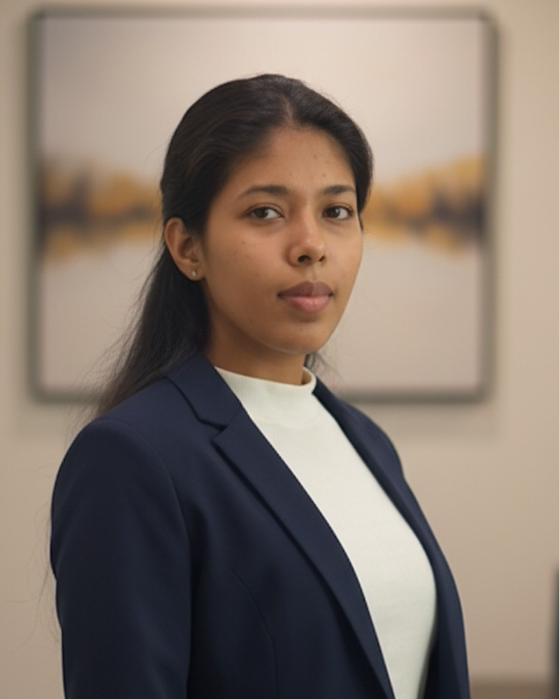

Hi, I'm Khushali, a robotics software engineer.
I build depth perception.
M.S. Mechanical Engineering (Robotics) at San José State. I write ROS 2, C++ and embedded code for estimation and control, then test it on real hardware. Before grad school I spent three years in test and validation at John Deere.
This arm uses closed-form two-link inverse kinematics, the same math as my manipulator project.

/about
About me
I'm a robotics engineer finishing my M.S. in Mechanical Engineering at San José State, focused on dynamics, controls and robot learning. I like the part where the math meets a real robot: deriving the model, writing the controller, and then finding out on hardware what the model missed.
Before grad school I spent three years at John Deere validating hydraulic and electromechanical systems for construction and forestry machines. That's where I learned to test things properly. Today I build hardware-in-the-loop test automation at SPAN, write STM32 firmware for the SJSU Robotics Mars rover, and do my MS project on depth-based person following for the Jackie service robot.
- Focusmanipulation, state estimation, optimal control, robot learning
- ToolsC++, Python, ROS 2, MuJoCo, MATLAB/Simulink, STM32
- Looking forfull-time robotics software roles from May 2027
/projects
Selected projects
The six full-width projects have case studies: each stage, the problems I hit and how I fixed them.
/skills
Where I work in the robot
Skills grouped by layer of the autonomy stack. The bar shows how deep I've gone in each.
sensors in ↓ motor commands out
/experience
Experience
Most recent first. Open Details for what I did and what it changed.
/education
Education and leadership
/contact
Let's talk robots.
I'm looking for full-time robotics software roles starting after I graduate in May 2027.